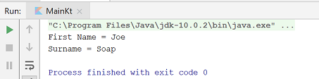
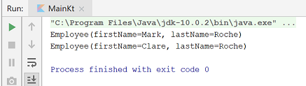

Introduction to Kotlin Classes and Collections.
Some theory first!
In Kotlin, classes cannot have fields; they have properties:
A class in Kotlin can have a primary constructor and one or more secondary constructors.
class Person constructor(firstName: String)
{
}class Person(firstName: String, lastName: String)
{
}class Person(val firstName: String, val lastName: String)
{
}class Person {
constructor(parent: Person) {
parent.children.add(this)
}
}In Kotlin, getters (val and var) and setters (var) are optional and are auto-generated if you do not create them in your program.
First let's create a new project and then start writing a class, Person.
On the college computers, don't run IntelliJ as normal. Instead, run it as Adminisrator by right clicking on the App and selecting the option Run as Administrator.
In IntelliJ, create a new project. When the New Project window appears, remember to choose:
Use the following credentials for your new project:
and ensure that the chosen location for your project is ok:
Gradle will start downloading required dependencies.
Right click on the src/main/kotlin directory and, when the context menu appears, select New followed by Kotlin Class/File.
When the window appears, enter the class name in the format of packagename.classname i.e. ie.wit.classes.main and click ok.
Using the same approach, create a second class called Person.
Start with entering this code in the Person class i.e. a class definition with a primary constructor for Person that accepts two String parameters.
class Person(val firstName: String, val lastName: String) {
}In your main class, enter the following code:
fun main(args: Array<String>) {
val person = Person("Joe", "Soap")
println("First Name = ${person.firstName}")
println("Surname = ${person.lastName}")
}In our main function, we instantiating a person object with a first name of Joe and a last name of Soap. We are then printing out the contents of these properties. Note that we are using String Templates that we looked at in lab02 to construct our output.
Run this code and you should have the following output:

Did you notice that we created both of the properties in Person as val fields.
Try insert an update of the firstName field before we start printing out i.e.:
We get a syntax error. val properties are immutable...i.e. they cannot be updated. Delete this line of code and move onto the next step.
We will experiment a little here with the primary constructor of the Person class.
Your Person class currently looks like this...the properties are declared in the primary constructor:
class Person(val firstName: String, val lastName: String) {
}First remove the property declarations to be part of the class i.e.:
class Person() {
val firstName: String
val lastName: String
}This will generate an error, as they need to be initialised. Now add constructor variables like so and use them to initialise the Person properties (note that prefixing constructor variables with an underscore is standard):
class Person(_firstName : String, _lastName : String) {
val firstName = _firstName
val lastName = _lastName
}Now try run the main function again...your output should be the same i.e.:
Kotlin allows us to use varied parameters in primary constrctors. If we default a value at constructor level, we can use optional parameters when instantiating objects. We will try this out now.
In your main function, change the instantiation of the person object to be (i.e. only one parameter):
val person = Person("Joe)This generates a syntax error:
We have not set up the Person class to have varied parameters yet. We will do this now.
Give a default value for each property in the Person primary constructor i.e.:
class Person(_firstName : String = "UNKNOWN FIRSTNAME", _lastName : String = "UNKNOWN LASTNAME") {
val firstName = _firstName
val lastName = _lastName
}Now the syntax error disappears and when we run the code, we should get the following output:
Now lets add the following init block that will run some code at object creation time:
class Person(_firstName : String = "UNKNOWN FIRSTNAME", _lastName : String = "UNKNOWN LASTNAME") {
val firstName = _firstName
val lastName = _lastName
//initialisation block
init {
println("First Name = ${firstName}")
println("Surname = ${lastName}")
}
}Return the the Main.kt class and delete the println statements. Also add the two new object instantions with varying parameters e.g.:
fun main(args: Array<String>) {
val person = Person("Joe")
val person2 = Person("Joe", "Murphy")
val person3 = Person()
}When you run this code, you should have the following output (the println statements are now called from the init block):
All the properties and objects we created above are val i.e. can't be updated. What if we want properties that can be updated? We will do this in the next step when we talk about getters and setters.
In Kotlin, getters (val and var) and setters (var) are optional and are auto-generated if you do not create them in your program.
For example, the Person code that we just wrote:
class Person(_firstName : String = "UNKNOWN FIRSTNAME", _lastName : String = "UNKNOWN LASTNAME") {
val firstName = _firstName
val lastName = _lastName
//initialisation block
init {
println("First Name = ${firstName}")
println("Surname = ${lastName}")
}
}is equivalent to (note the explicit declaration of the getters):
class Person(_firstName : String = "UNKNOWN FIRSTNAME", _lastName : String = "UNKNOWN LASTNAME") {
val firstName = _firstName
get() = field
val lastName = _lastName
get() = field
//initialisation block
init {
println("First Name = ${firstName}")
println("Surname = ${lastName}")
}
}Add these getters into your code; IntelliJ will complain that they are redundant code...leave them there for the moment.
Getters apply to both val and var properties. Whereas setters only apply to var properties.
In your code, change val to var for both firstName and lastName property declarations.
Now lets add a setter for the lastName field that will convert the last name to uppercase (place it just after the get() for this property):
var lastName = _lastName
get() = field
//setter code:
set(value){
field = value.toUpperCase();
}Run your code again...the setters is not called at object creation time...i.e. the surname Murphy is NOT all in capitals.
In your main function, make the following changes:
person2.lastName = "flynn"
println("Updated Person 2 Surname: ${person2.lastName}")Run your code again and you should have the following output, showing that the setter was called and has converted the updated name to capitals:
Data classes were created to solely to hold data (i.e. models).
We can use the data class prefix to simply create a data class.
The compiler automatically generates methods from the primary constructor such as:
We will experiment with a few of these generated methods in this step.
The primary constructor must have at least one parameter
The parameters of the primary constructor must be marked as either var or val
The class cannot be open, abstract, inner or sealed
The class may extend other classes or implement interfaces
We will experiment with Data classes by creating a new class, Employee. Add the following code to it (note the keyword, data and also note that the parameters of the primary constructor are var):
data class Employee(var firstName: String, var lastName: String) {
}In your main function, comment out the lines of code in it and add four new lines of code i.e.:
fun main(args: Array<String>) {
// var person = Person("Joe")
// var person2 = Person("Joe", "Murphy")
// var person3 = Person()
// person2.lastName = "flynn"
// println("Updated Person 2 Surname: ${person2.lastName}")
val employee1 = Employee("Mark", "Roche")
val employee2 = employee1.copy(firstName = "Clare")
println(employee1)
println(employee2.toString())
}In the above code, we used the generated copy() method to copy one employee contents into another (and replace the first name).
Run the code. You can see from the output that there is a toString generated to the Employee.class file:

In your main function, add a third employee object:
val employee3 = employee1.copy()and add the following code (to demonstrate the use and existance of the generated methods, hashCode and equals):
println("employee1 hashcode = ${employee1.hashCode()}")
println("employee2 hashcode = ${employee2.hashCode()}")
println("employee3 hashcode = ${employee3.hashCode()}")
if (employee1.equals(employee2))
println("employee1 is equal to employee2.")
else
println("employee1 is not equal to employee2.")
if (employee1.equals(employee3))
println("employee1 is equal to employee3.")
else
println("employee1 is not equal to employee3.")When you run the code, you should have the following output:
Save your work...we will start on a new project in the next step.
In this step, we will experiment with Kotlin Arrays. Arrays in Kotlin can be created using arrayOf() or the Array() constructor.
Create a new IntelliJ project and call it collections-project. In this project, create a new class called main.
In your Main class, enter the following code:
fun main(args: Array<String>) {
val myArray = arrayOf(4, 5, 6, 7)
println(myArray.asList())
println(myArray[2])
}When you run this code, you should have the following output:
[4, 5, 6, 7]
6Add the following lines of code to the end of your main function:
val myMixedArray = arrayOf(4, 5, 6, 7, "mixed", "types", "allowed")
println(myMixedArray.asList())
println(myMixedArray)When you run this code, the last two lines of the output should be:
[4, 5, 6, 7, mixed, types, allowed]
[Ljava.lang.Object;@721e0f4fIn the last line of output, we are interested in the inferred type...Object! Kotlion allows mixed type arrays.
Add the following lines of code to the end of your main function:
val intArray1 = intArrayOf(4, 5, 6, 7)
val intArray2 = arrayOf<Int>(4, 5, 6, 7)
val charArray = charArrayOf('a', 'b', 'c', 'd')
val booleanArray = booleanArrayOf(true, false, true)
println("IntArray1 : ${intArray1.asList()} and is type ${intArray1.javaClass.typeName}")
println("IntArray2 : ${intArray2.asList()} and is type ${intArray2.javaClass.typeName}")
println("charArray : ${charArray.asList()} and is type ${charArray.javaClass.typeName}")
println("booleanArray : ${booleanArray.asList()} and is type ${booleanArray.javaClass.typeName}")In these lines of code, we are choosing the type of the array when we create it.
When you run this code, the last four lines of the output should be:
IntArray1 : [4, 5, 6, 7] and is type int[]
IntArray2 : [4, 5, 6, 7] and is type java.lang.Integer[]
charArray : [a, b, c, d] and is type char[]
booleanArray : [true, false, true] and is type boolean[]When choosing a type for our array, can we have a mixed array? Let's try it.
Add the following two lines of code to the end of your main function:
val mixedArray1 = intArrayOf(4, 5, 6, 7, "will","not","compile")
val mixedArray2 = arrayOf<Int>(4, 5, 6, 7,"will","not","compile")These will result in a syntax error. So we cannot have a mixed array in this case! Delete these two lines of code.
The Array() constructor requires a size and a lambda function. We will be using lambda functions a fair bit when we move into the Android Framework.
Add the following lines of code to the end of your main function (note that the second parameter is a lambda function...we will cover more on this later):
val intArray = Array(6, {i -> i * 2} )
println ("Array using Constructor: ${intArray.asList()}")When you run this code, the last line of the output should be:
Array using Constructor: [0, 2, 4, 6, 8, 10]Looking at the output, can you figure out what the Lambda function is doing? Hint: i refers to the index.
Unlike many languages, Kotlin distinguishes between mutable and immutable collections (lists, sets, maps, etc). Precise control over exactly when collections can be edited is useful for eliminating bugs, and for designing good APIs.
immutable - The Kotlin List<> type is an interface that provides read-only operations like size, get and so on. Like in Java, it inherits from Collection<> and that in turn inherits from Iterable<>.
mutable - Methods that change the list are added by the MutableList<> interface.
We will be focusing on the List type mainly in this module.
Add the following lines of code to the end of your main function. This code create a mutable list of fruit, adds an item, changes an item and removes an item:
val fruit = mutableListOf("Banana", "Kiwifruit", "Mango", "Apple")
println("Mutable List: ${fruit}")
//add an item
fruit.add("Pear")
println("Mutable List: ${fruit}")
//update an item
fruit[1] = "Orange"
println("Mutable List: ${fruit}")
//remove an item
fruit.removeAt(2)
println("Mutable List: ${fruit}")When you run this code, the last lines of the output should be:
Mutable List: [Banana, Kiwifruit, Mango, Apple]
Mutable List: [Banana, Kiwifruit, Mango, Apple, Pear]
Mutable List: [Banana, Orange, Mango, Apple, Pear]
Mutable List: [Banana, Orange, Apple, Pear]Add the following lines of code to the end of your main function:
val mutableNumbers: MutableList<Int> = mutableListOf(1, 2, 3)
val readOnlyView: List<Int> = mutableNumbers
println("Mutable numbers: ${mutableNumbers}") // prints "[1, 2, 3]"
mutableNumbers.add(4)
println("Read only view: ${readOnlyView}") // prints "[1, 2, 3, 4]"When you run this code, the last lines of the output should be:
Mutable numbers: [1, 2, 3]
Read only view: [1, 2, 3, 4]The immutable list can view any updates. But it can't do any updates. Try add this line of code to the end of the main function:
readOnlyView.add(5) // -> does not compileIt will not compile as the add method is not allowed to run over immutable lists. Delete this line of code now.
In the above code, we just printed out the entire contents of the lists. If we wanted to iterate over the collection of fruit and, say, print each item on a new line, we could do it like so (add this at the end of your main method):
//ITERATING
for(fruitItem in fruit)
println(fruitItem)Run this code and you should have the each item stored in fruit printed on individual lines like so:
Banana
Orange
Apple
PearSave your work and keep the project open.
We will be using lambdas a fair bit when we move into the Android framework. We will familiarise ourselves with them a little before starting Android.
Some points on Lambdas:
You can pass an anonymous function (a lambda) as a parameter of a function.
A lambda expression is always surrounded by curly braces.
Its parameters (if any) are declared before -> (parameter types may be omitted),
The body goes after -> (when present).
An implicit variable called “it” is created and refers to the lambda expression’s only argument.
In the last step, we looked at Lists and also at iterating over them using the for-each loop e.g.:
//DECLARING A MUTABLE LIST
val fruit = mutableListOf("Banana", "Kiwifruit", "Mango", "Apple")
//ITERATING OVER THE LIST
for(fruitItem in fruit)
println(fruitItem)In this step, we will use Lamdbas to do some work on Lists for us.
Leaving all code as is in the main function, add the following lines as the last statements in the function:
println("\nUsing Lambdas:\n")
fruit.forEach {it -> println(it)}The last line of code uses the fruit list we previously created. Over the fruit list, it calls the forEach function, passing a lambda expression as its parameter. it is an implicit variable created and is the lambda expressions only parameter. In this case it refers to each item in fruits. It then prints each item in fruit.
Run this code and you should have these lines of code as the last on your console:
Using Lambdas:
Banana
Orange
Apple
PearLet's make one more change to the last line...specifying it as the parameter to the lamdbda is optional, so lets remove it (run the code again to make sure all is ok):
println("\nUsing Lambdas:\n")
fruit.forEach {println(it)}Our last line of code in the main function should read:
fruit.forEach {println(it)}We are going to update this line so that we can filter out all items except those that contain an. Make this change:
fruit.filter {it.contains("an")}
.forEach {println(it)}Run the code, and only Banana and Orange should be displayed to the console.
Our last line of code in the main function should read:
fruit.filter {it.contains("an")}
.forEach {println(it)}We are going to update this line so that we can sort the qualifying items. As our data is already in alphabetic order, we will sort descending. Make this change:
fruit.filter {it.contains("an")}
.sortedByDescending { it }
.forEach {println(it)}Run the code, and only Banana and Orange should be displayed to the console, but this time, they are displayed in descending order with Orange first, then Banana.
Our last line of code in the main function should read:
fruit.filter {it.contains("an")}
.sortedByDescending { it }
.forEach {println(it)}We are going to update this line so that we can display the qualifying items in uppercase. Make this change:
fruit.filter {it.contains("an")}
.sortedByDescending { it }
.map {it.toUpperCase()}
.forEach {println(it)}Run the code. Now ORANGE, followed by BANANA should be displayed.
Save your work and close the project.
If you have time to spare, experiment with the constructs we covered in this lab and/or experiment with this kotlin learning resource:
Should you need it, the solution for the lab is here:
fun main(args: Array<String>) {
val myArray = arrayOf(4, 5, 6, 7)
println(myArray.asList())
println(myArray[2])
val myMixedArray = arrayOf(4, 5, 6, 7, "mixed", "types", "allowed")
println(myMixedArray.asList())
println(myMixedArray)
val intArray1 = intArrayOf(4, 5, 6, 7)
val intArray2 = arrayOf<Int>(4, 5, 6, 7)
val charArray = charArrayOf('a', 'b', 'c', 'd')
val booleanArray = booleanArrayOf(true, false, true)
println("IntArray1 : ${intArray1.asList()} and is type ${intArray1.javaClass.typeName}")
println("IntArray2 : ${intArray2.asList()} and is type ${intArray2.javaClass.typeName}")
println("charArray : ${charArray.asList()} and is type ${charArray.javaClass.typeName}")
println("booleanArray : ${booleanArray.asList()} and is type ${booleanArray.javaClass.typeName}")
val intArray = Array(6, {i -> i * 2} )
println ("Array using Constructor: ${intArray.asList()}")
//MUTABLE LIST
val fruit = mutableListOf("Banana", "Kiwifruit", "Mango", "Apple")
println("Mutable List: ${fruit}")
//add an item
fruit.add("Pear")
println("Mutable List: ${fruit}")
//update an item
fruit[1] = "Orange"
println("Mutable List: ${fruit}")
//remove an item
fruit.removeAt(2)
println("Mutable List: ${fruit}")
//IMMUTABLE LIST
val mutableNumbers: MutableList<Int> = mutableListOf(1, 2, 3)
val readOnlyView: List<Int> = mutableNumbers
println("Mutable numbers: ${mutableNumbers}") // prints "[1, 2, 3]"
mutableNumbers.add(4)
println("Read only view: ${readOnlyView}") // prints "[1, 2, 3, 4]"
//ITERATING
for(fruitItem in fruit)
println(fruitItem)
println("\nUsing Lambdas:\n")
fruit.filter {it.contains("an")}
.sortedByDescending { it }
.map {it.toUpperCase()}
.forEach {println(it)}
}